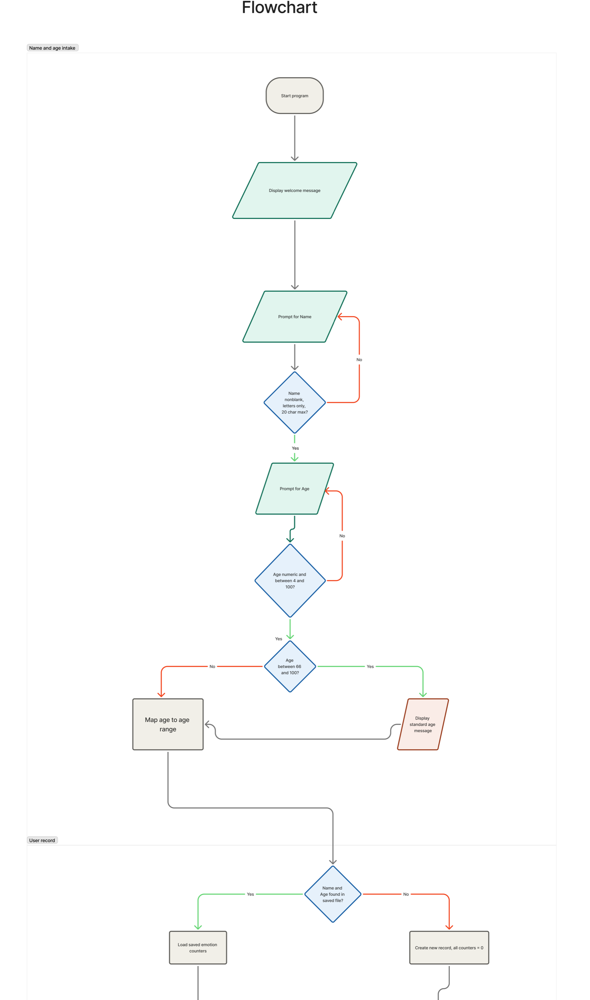
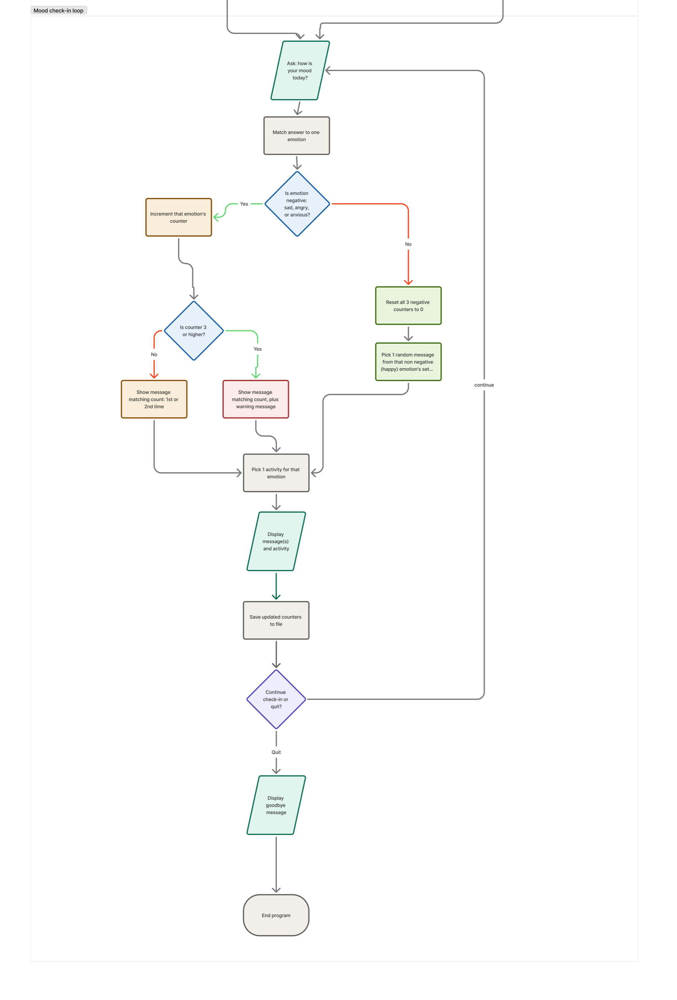

logic_1/MoodBuddy.py). The same thinking (input → check →
decide → act → record) is what I later used for access decisions in Care Access Navigator.| Rubric criterion | Where it is | How it is met |
|---|---|---|
| Craft Algorithms | 1. Algorithm | 22 numbered steps (6+ required) with Yes/No and If decisions built in |
| Visualize with Flowcharts | 2. Flowchart | Figma flowchart that follows the algorithm, using 5 symbols: Start, Stop, input/output, process, decision (plus arrows) |
| Incorporate Boolean Logic | 3. Boolean Logic | 9 True/False decision points, each matched to an algorithm step and a flowchart diamond |
| Apply Conditional Logic | 4. Conditional Logic | "If" conditions in the flowchart, matched to the algorithm and the Python code |
Made in Figma (logic_1/MoodBuddy_Algorithm_Flowchart.png). It follows the algorithm in three sections:
name and age intake, user record, and mood check-in loop. Red arrows are "No" paths and green arrows are "Yes" paths.
| Symbol | Meaning | Used for (algorithm step) |
|---|---|---|
| Rounded rectangle | Start / Stop (terminator) | Start program (1), End program (22) |
| Parallelogram (green) | Input / output | Welcome message (2), prompt for Name (3) and Age (5), ask mood (10), display message (16a/18b), goodbye (21) |
| Rectangle | Process | Map age to range (8), load or create record (9), reset or increase counters (13a/13b), pick activity, save data (19) |
| Diamond | Decision (Boolean True / False) | Name valid? (4), Age valid? (6), Age 66–100? (7), record found? (9), negative mood? (12), counter ≥ 3? (16b), continue or quit? (20) |
| Arrow (flow line) | Direction of flow and loops | Loops back to step 3, step 5 and step 10 |


Every diamond in the flowchart is a Boolean question: the answer is only True (Yes) or False (No), and each answer has its own arrow. Several combine conditions with AND, OR and NOT.
| # | Decision (flowchart diamond) | Boolean expression | Step | True → / False → |
|---|---|---|---|---|
| 1 | Is the name valid? | name != "" AND len(name) <= 20 AND name.isalpha() | 4 | continue / ask for name again |
| 2 | Is the age valid? | age.isdigit() AND NOT (age < 4 OR age > 100) | 6 | continue / ask for age again |
| 3 | Is the age between 66 and 100? | 66 <= age <= 100 | 7 | standard message / age-range message |
| 4 | Is (name + age) in the saved file? | user_key in users | 9 | load counters / new record |
| 5 | Is the emotion negative? | mood == "Sad" OR mood == "Angry" OR mood == "Anxious" | 12 | negative path (13b) / non-negative path (13a) |
| 6 | Is the counter 1? | count == 1 | 14b | message 1 / next check |
| 7 | Is the counter 2? | count == 2 | 15b | message 2 / next check |
| 8 | Is the counter 3 or higher? | count >= 3 | 16b | message + warning / normal message |
| 9 | Continue or quit? | choice == "2" (quit) | 20 | goodbye (21) / back to step 10 |
The "If" conditions in the flowchart match the algorithm and the Python program line for line:
| If condition (flowchart) | Algorithm | Python (MoodBuddy.py) | Then |
|---|---|---|---|
| If name is blank, too long or not letters | Step 4 | if name == "": … elif len(name) > 20: … elif not name.isalpha(): | Show the reason, loop back to the name prompt |
| If age is not a number, or below 4 or above 100 | Step 6 | if not age_input.isdigit(): …if age < 4 or age > 100: | Loop back to the age prompt |
| If age is 66–100 | Step 7 | if 66 <= age <= 100: | Display the standard message |
| If age is 4–8 / 9–13 / 14–19 / 20–30 / 31–50 / 51–65 | Step 8 | if 4 <= age <= 8: … elif 9 <= age <= 13: … | Set the age range for messages and activities |
| If the user is already saved | Step 9 | if user_key in users: | Load counters, otherwise create a new record |
| If the mood is negative, else non-negative | Step 12 | if mood in NEGATIVE_MOODS: | Negative: count up and pick by count. Else: reset counters, random message |
| If the counter is 3 or more | Step 16b | if current_count >= 3: | Add the warning message for that emotion |
| If the user chooses Quit | Step 20 | if get_continue_choice() == "2": | Say goodbye and end; otherwise loop to step 10 |
Maya1 (rejected:
"Use letters only"), Maya (accepted), age abc (rejected: "enter age as a number"), 120
(rejected: "between 4 and 100"), 16 (accepted, new record created), then Sad three times. Check-ins 1 and 2
showed messages 1 and 2; check-in 3 added the warning "you have checked in as sad several times", exactly as steps 4, 6
and 13b–16b say.